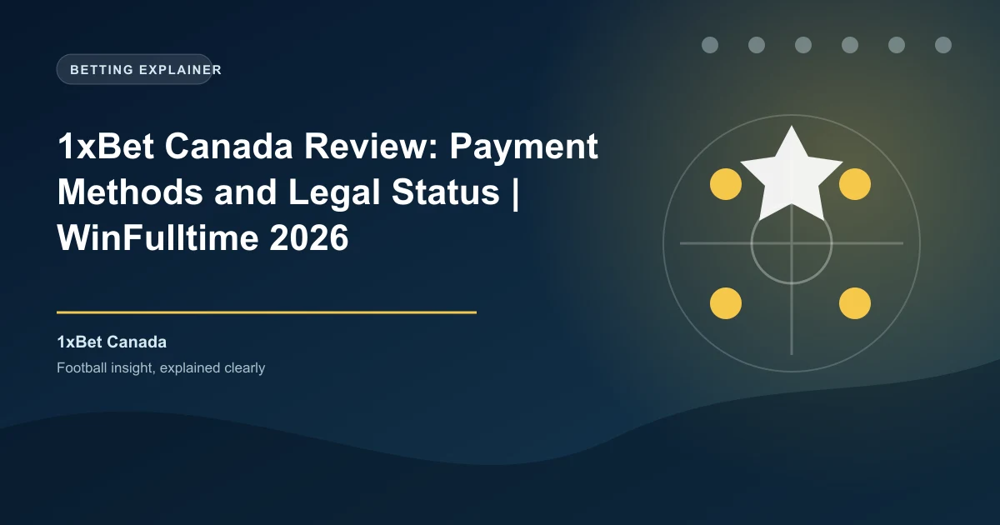

Canada's online gambling landscape underwent a seismic shift when Ontario launched its regulated iGaming market in April 2022. The province, home to nearly 40% of Canada's population, now requires all online betting operators to hold a license from iGaming Ontario (iGO). 1xBet chose not to pursue this provincial license, making it banned in Ontario but still accessible in other Canadian provinces. This review covers what Canadian bettors outside Ontario need to know.
Canada's gambling regulation is complex. Under the Criminal Code of Canada, single-event sports betting was only legalized federally in August 2021, and provinces were given the authority to regulate online gambling within their borders.
In Ontario, 1xBet is not licensed by iGaming Ontario and is prohibited from operating. The iGO regulates all legal online gambling in the province, and operators must meet strict requirements including responsible gambling measures, Know Your Customer (KYC) protocols, and tax obligations. 1xBet does not appear on iGO's list of licensed operators, and Ontario ISPs may block access to the site.
In other provinces, the situation is different. Provinces like Alberta, British Columbia, Quebec, and Manitoba have their own gambling regulators but have not implemented the same comprehensive online framework as Ontario. In these provinces, 1xBet operates in a grey area. The platform is accessible and accepts Canadian players, but without a provincial license. Canadian bettors in these provinces should understand that they are using an offshore platform without local regulatory protection.
If you are located in Ontario, 1xBet is not legally available to you. The platform is not licensed by iGaming Ontario and accessing it from within Ontario may violate provincial regulations. Ontario bettors should use provincially licensed platforms like BetMGM, FanDuel, DraftKings, or other iGO-licensed operators.
The legal gambling age varies by province in Canada:
1xBet requires bettors to meet the minimum age requirement for their province. Bettors in Alberta, Manitoba, and Quebec can register at 18, while all other provinces require a minimum age of 19.
1xBet Canada offers new players a 120% first deposit bonus up to $540 CAD. Here is the breakdown:
| Detail | Value |
|---|---|
| Welcome Bonus | 120% first deposit bonus |
| Maximum Bonus | $540 CAD |
| Minimum Deposit | $4 CAD |
| Wagering Requirement | 10x wagering |
| Minimum Odds | 1.40 per selection |
| Minimum Selections | 3 per accumulator |
| Validity Period | 30 days from registration |
The $4 CAD minimum deposit makes 1xBet one of the most accessible betting platforms in the Canadian market. The 120% bonus is competitive, though the 10x wagering requirement is higher than the 5x requirement offered in African and Asian markets. Canadian bettors should factor this into their bonus strategy.
To claim the bonus, register a new account, select the welcome bonus during registration, and deposit at least $4 CAD via Interac e-Transfer, credit card, or cryptocurrency. The bonus is credited instantly and must be wagered through accumulator bets with at least three selections at minimum odds of 1.40 per leg.
Ongoing promotions for Canadian players include accumulator boosts, free bet offers tied to NHL and NFL seasons, and cashback promotions. 1xBet Canada also runs enhanced odds promotions during major sporting events including the Stanley Cup playoffs, Grey Cup, and the CFL season.
1xBet Canada supports payment methods that Canadian bettors use daily, with Interac e-Transfer being the primary deposit method. Interac is the dominant payment network in Canada, used by over 15 million Canadians according to Interac Corporation.
Interac e-Transfer is the most popular deposit method for Canadian bettors. 1xBet supports instant Interac deposits with a minimum of just $4 CAD. The process is straightforward: select Interac on the deposit page, enter the amount, log in to your online banking, and approve the e-Transfer. Funds appear in your 1xBet account within minutes. Interac is accepted by all major Canadian banks including RBC, TD, Scotiabank, BMO, and CIBC.
1xBet Canada supports deposits in Bitcoin, Ethereum, USDT, Tron, Litecoin, and over 40 additional cryptocurrencies. Crypto deposits are processed instantly with no fees from 1xBet's side. This is particularly useful for Canadian bettors who prefer the privacy and speed of cryptocurrency transactions.
1xBet Canada processes withdrawals through Interac and other methods, with competitive minimums and processing times:
| Method | Minimum Withdrawal | Processing Time |
|---|---|---|
| Interac e-Transfer | $10 CAD | 15 minutes - 24 hours |
| Visa (Fast Withdrawal) | $10 CAD | 15 minutes - 7 days |
| Skrill / Neteller | $10 CAD | 15 minutes |
| Cryptocurrency | $10 CAD (equivalent) | 15 minutes |
| Bank Transfer | $10 CAD | 1-7 business days |
1xBet charges no internal withdrawal fees. Interac withdrawals are processed within 15 minutes to 24 hours in most cases. KYC verification is required before the first withdrawal and involves submitting a government-issued ID (driver's license, passport, or provincial ID card) and proof of address.
Canadian bettors should note that gambling winnings are generally not taxable in Canada under the Canada Revenue Agency (CRA) guidelines, unless gambling is your primary source of income. This is a significant advantage compared to many other countries where betting winnings are taxed.
1xBet covers over 60 sports with extensive market depth. For Canadian bettors, hockey is the dominant sport, followed by football (CFL and NFL), basketball, and baseball.
The NHL is the primary focus for Canadian bettors, and 1xBet delivers comprehensive coverage. With 100+ markets per NHL game, including match winner, puck line, over/under goals, period betting, player props, and live in-play markets, Canadian hockey fans have extensive options. 1xBet also covers the AHL, SHL, KHL, and international hockey tournaments including the IIHF World Championships and Olympic hockey.
The live betting section at 1xBet Canada is comprehensive, with thousands of live events available daily. NHL live betting is particularly popular, with in-play markets available for every game during the season. The live interface provides real-time score updates, statistical overlays, and dynamic odds.
1xBet offers live streaming on select events for registered users with a positive account balance. While not every NHL game is streamed, the coverage includes thousands of events monthly across hockey, football, basketball, and soccer. The cash-out feature is available on both pre-match and live bets.
1xBet offers a dedicated mobile app for Android devices, available as a direct APK download from the 1xBet Canada website. Google Play does not permit real-money gambling apps in most regions, so Android users must enable "Install from Unknown Sources" in their device settings. The iOS app may be available on the Apple App Store in some regions.
The mobile app provides full access to all betting markets, live streaming, cash-out, Interac deposits and withdrawals, and account management. According to Statista, mobile betting accounts for over 70% of all online wagers in Canada, making app performance critical.
1xBet Canada provides 24/7 customer support through multiple channels:
Support is available in English and French, catering to both English-speaking and French-speaking Canadian bettors. According to Trustpilot, 1xBet's customer support ratings vary, with positive reviews highlighting live chat speed and negative reviews focusing on withdrawal verification delays.
1xBet provides responsible gambling tools including deposit limits, session time limits, self-exclusion, and reality checks. However, as an offshore Curaçao-licensed operator with no Canadian provincial license, 1xBet is not required to participate in provincial self-exclusion programs like those offered by Responsible Gambling Council in Ontario or other provinces.
Canadian bettors should use 1xBet's built-in responsible gambling tools and be aware that the offshore licensing provides fewer regulatory protections than provincially licensed platforms. In Ontario, bettors are strongly encouraged to use iGO-licensed platforms that are subject to stricter responsible gambling requirements.
Registration on 1xBet Canada is straightforward:
You must be 18+ (Alberta, Manitoba, Quebec) or 19+ (all other provinces) and complete KYC verification before your first withdrawal.
1xBet is a viable option for Canadian bettors in provinces where it is accessible (Alberta, BC, Quebec, Manitoba, and others). The Interac e-Transfer deposit integration, comprehensive NHL coverage, and 120% welcome bonus up to $540 CAD make it a solid offshore choice. The $4 CAD minimum deposit is very accessible, and the French language support is a plus for Quebec bettors.
The critical limitation is the Ontario ban. Canadian bettors in Ontario must use iGO-licensed platforms instead. For bettors in other provinces who are comfortable with offshore licensing, 1xBet offers good value. However, the 10x wagering requirement is higher than the 5x offered in African and Asian markets, which reduces the effective value of the welcome bonus.
Ready to bet? Check our free daily NHL predictions for value bets across the regular season and playoffs.